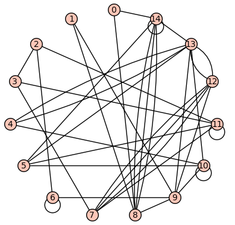

Section 5.6 Communities via Modularity Maximization
Our goal now is to use the configuration model as the basis for our detection of communities in a network. For simplicity, we will focus on the case of dividing a network into two communities. We will use in our description of the process the Kronecker delta function, which is defined as
\begin{equation*}
\delta_{a,b} = \begin{cases}
1 \amp \text{if } a=b, \\
0 \amp \text{if } a \neq b.
\end{cases}
\end{equation*}
Checkpoint 5.6.1.
Suppose we have a graph \(G=(V,E)\) where \(V=\{1,2,\ldots,n\}\) and \(|E|=m\) Divide the vertex set \(V\) into two subsets \(V_1\) and \(V_2\) such that \(V_1 \uplus V_2 = V\text{.}\) We want to count the number of edges that fall within either \(V_1\) or \(V_2\text{,}\) so that we can compare this to the expected number of edges within those sets given by the configuration model. We first define a function that indicates to which subset each vertex belongs. Define the function \(g_i:V\to \{1,2\}\) by
\begin{equation*}
g_i=
\begin{cases}
1 \amp \text{if } i\in V_1, \\
2 \amp \text{if } i \in V_2.
\end{cases}
\end{equation*}
Define further the value \(A_{i,j}\) where where \(A_{i,j}\) is the number of edges between vertices \(i\neq j\) in \(G\) and \(A_{i,i}\) is twice the number of loops at vertex \(i\text{.}\) For those of you who have seen some matrix algebra, observe that the values of \(A_{i,j}\) are the entries of the adjacency matrix of \(G\text{.}\)
Checkpoint 5.6.2.
For the graph below, let \(V_1=\{0,1,2,3,4\}\) and \(V_2=\{5,6,7,8\}\text{.}\)
-
\(\{0,1\}, \{3,7\}, \{4,5\}, \{8,8\}\)

Checkpoint 5.6.4.
For the graph below, let \(V_1=\{0,1,2,3,4\}\) and \(V_2=\{5,6,7,8\}\text{.}\)
-
Verify that the formula\begin{equation*} \frac{1}{2}\sum_{1\leq i,j \leq n} A_{i,j}\delta_{g_i,g_j} \end{equation*}counts the number of edges within \(V_1\) and \(V_2\text{.}\)
Theorem 5.6.6.
Given the setup above, the total number of edges that connect vertices within the same subset is given by:
\begin{equation*}
\sum_{\{i,j\}\in E(G)} \delta_{g_i,g_j} = \frac{1}{2}\sum_{1\leq i,j \leq n} A_{i,j}\delta_{g_i,g_j} \, .
\end{equation*}
Proof.
For any edge that is not a loop, the right-hand side counts it twice, as any pair of distinct numbers shows up twice in the sum. Thus, we divide by two to have that edge contribute one to the sum. When \(i=j\text{,}\) the value \(A_{i,i}\) is by definition twice the number of loops at vertex \(i\text{,}\) so dividing by two again gives the correct count of edges.
Checkpoint 5.6.7.
Does this proof make sense? Why or why not? Does it make sense now why we defined \(A_{i,i}\) to be twice the number of loops at vertex \(i\text{?}\)
We can now compare the number of edges within the subsets \(V_1\) and \(V_2\) to the expected number of such edges in the configuration model with the same degree sequence as \(G\text{.}\) Consider the following facts:
-
The total number of edges within \(V_1\) and \(V_2\) is given by \(\frac{1}{2}\sum_{1\leq i,j \leq n} A_{i,j}\delta_{g_i,g_j}\text{,}\) and therefore the fraction of all edges in the network that are contained in \(V_1\) and \(V_2\) is\begin{equation*} \frac{1}{2m}\sum_{1\leq i,j \leq n} A_{i,j}\delta_{g_i,g_j} \, . \end{equation*}
-
The expected total number of edges within \(V_1\) and \(V_2\) is given by \(\frac{1}{2}\sum_{1\leq i,j \leq n} \frac{d_id_j}{2m-1}\delta_{g_i,g_j}\text{,}\) and therefore the expected fraction of all edges in the network that are contained in \(V_1\) and \(V_2\) is\begin{equation*} \frac{1}{2m}\sum_{1\leq i,j \leq n} \frac{d_id_j}{2m-1}\delta_{g_i,g_j}\approx \frac{1}{2m}\sum_{1\leq i,j \leq n} \frac{d_id_j}{2m}\delta_{g_i,g_j} \end{equation*}
-
Thus, the (approximate) difference between the actual and expected fraction of edges from \(G\) within \(V_1\) and \(V_2\) is given by\begin{equation*} \frac{1}{2m}\sum_{1\leq i,j \leq n} A_{i,j}\delta_{g_i,g_j} - \frac{1}{2m}\sum_{1\leq i,j \leq n} \frac{d_id_j}{2m}\delta_{g_i,g_j} \, . \end{equation*}
This leads us to the following definition.
Definition 5.6.9.
Given a network \(G\) with degree sequence \((d_1,d_2,\ldots,d_{n})\) and a partition of the vertex set \(V=V_1 \uplus V_2\text{,}\) the modularity \(Q\) of the partition is defined as
\begin{equation*}
Q = \frac{1}{2m} \sum_{1\leq i,j \leq n} \left( A_{i,j} - \frac{d_i d_j}{2m} \right) \delta_{g_i,g_j} \, ,
\end{equation*}
where \(m\) is the number of edges in \(G\text{.}\)
Checkpoint 5.6.10.
For the graph below, let \(V_1=\{0,1,2,3,4\}\) and \(V_2=\{5,6,7,8\}\text{.}\)
-
Compute the modularity of this partition for this network.
Example 5.6.12.
The following Sagemath code will generate a random network with degree sequence D using the configuration model, compute the modularity for every vertex partition, and show a histogram of those values.
import networkx as nx
L = []
D = [2,2,3,3,3,4,4,5,6,6,6,6,6,8,8]
G = nx.configuration_model(D)
M = 0
Se = []
for S in Subsets(Graph(G).vertices()):
mod = nx.community.modularity(G,[list(S),[i for i in range(len(T)) if i not in S]])
if mod > M:
M = mod
Se = S
L.append(mod)
show(histogram(L))
print(Se)
print(M)
Graph(G).show(layout='circular')
As an example, one iteration of this yields the following graph, histogram, and maximum modularity \(0.32986111111111116\) obtained with \(V_1=\{2, 3, 6, 7, 11, 12\}\text{.}\)


The general heuristic we will use is the following: the partition of the vertices of \(G\) with the highest modularity is the one that best represents a partition of the network into communities. To carry this out in practice, we will adjust the definition of the modularity function.
Rather than using the function \(g_i\text{,}\) we will use the function
\begin{equation*}
s_i =
\begin{cases}
+1 \amp \text{if } i\in V_1, \\
-1 \amp \text{if } i \in V_2.
\end{cases}
\end{equation*}
With this definition, we have that
\begin{equation*}
\delta_{g_i,g_j}=\frac{1}{2}(s_is_j+1) \, .
\end{equation*}
Checkpoint 5.6.16.
Prove that
\begin{equation*}
\sum_{1\leq i \leq n} B_{i,j} = 0
\end{equation*}
and similarly
\begin{equation*}
\sum_{1\leq j \leq n} B_{i,j} = 0 \, .
\end{equation*}
We therefore have that
\begin{equation*}
Q = \frac{1}{2m}\sum_{1\leq i,j\leq n}B_{i,j}\frac{1}{2}(s_is_j+1) = \frac{1}{4m}\sum_{1\leq i,j\leq n}B_{i,j}s_is_j \, .
\end{equation*}
Thus, the goal is to maximize the value of \(Q\) over all \(s\in \{-1,1\}^n\text{.}\) This is an example of a discrete optimization problem: we have a degree two multivariate polynomial in the variables \(s_1,\ldots,s_n\text{,}\) and we want to maximize it over the finite set of points \(\{-1,1\}^n\text{.}\)